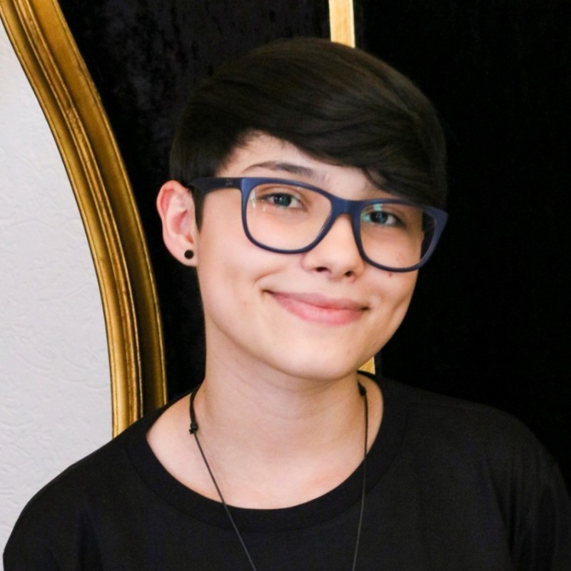

Camila Barcellos
Graduanda
Contato
- +55 54 99169-0252
- camilaafbarcellos
@gmail.com - linkedin.com/in/camilafbarcellos
- camilafbarcellos
Habilidades técnicas
-
HTML5, CSS3 e JavaScript
-
Java, Python, C++ e PHP
-
PostgreSQL
-
Git e GitHub
-
Linux
-
HelpDesk
Habilidades técnicas
-
Escrita e comunicação
-
Atendimento ao cliente
-
Inglês avançado